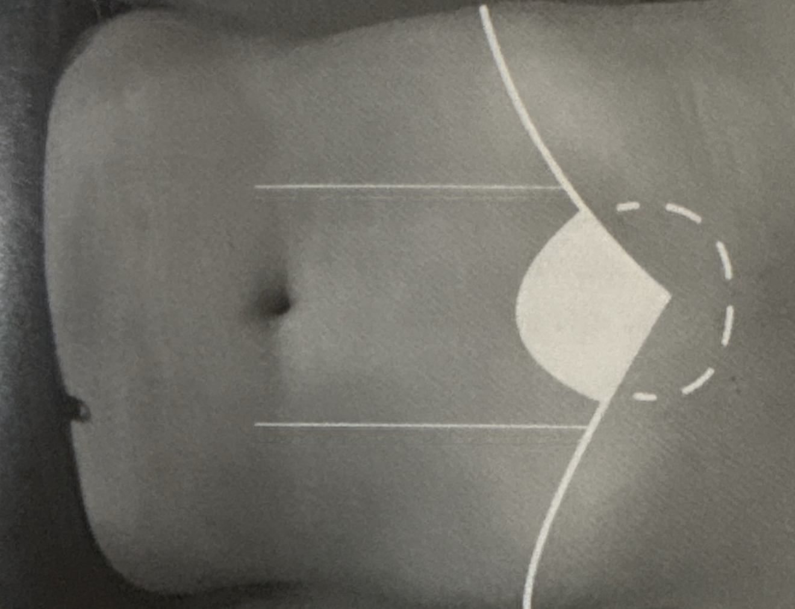

Mapa 1
Shokuhi no Hara
Sentir opresión abdominal (Estancamiento Digestivo)
Abdomen endurecido por alimentos no digeridos (Shokutai) y disfunción de Bazo/Estómago. Genera dolor/tensión refleja en la espalda a la altura de las vértebras D7 y D9.
